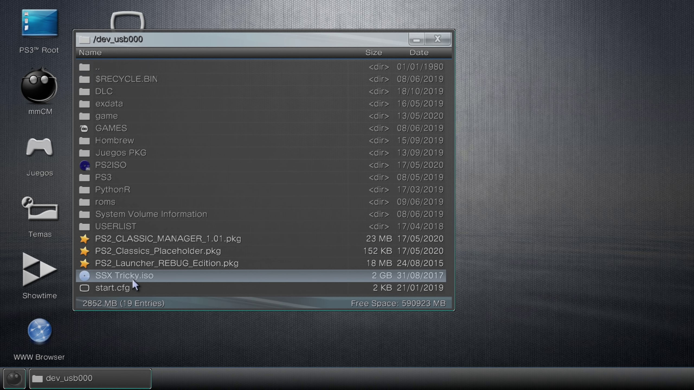
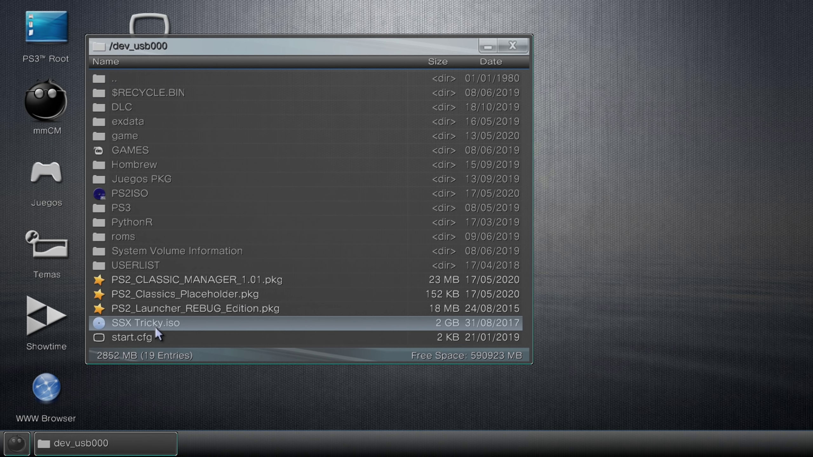
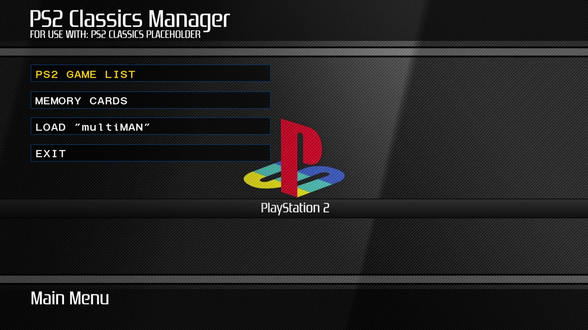
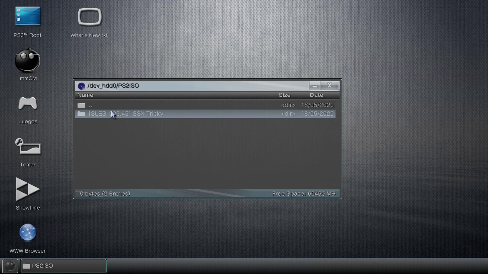
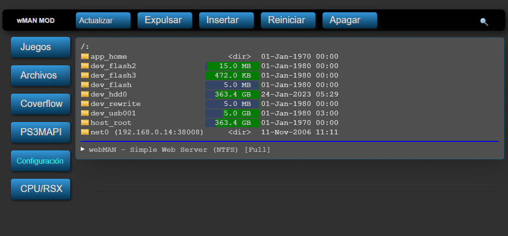

PS3 Convertir ISO de PS2 sin PC
Con este método podemos Convertir ISO de PS2 para HEN sin PC en nuestra consola de PS3, Convierte tus juegos de playstation 2 a formato de imagen ISO, donde se te facilitara la manipulación de tu juego, sin la necesidad de programas.
Para esta Guia
Requisitos para este tutorial
- USB en formato FAT32
- Un juego en ISO de PS2
Programas para este Tutorial
Archivos Para descargar
| Archivos | Servidores | |
|---|---|---|
| PS2 APP | Mega | |
| exdata | Mega | |
| Lista de compatibilidad del emulador de PS2 Classics | github.com | |
Empezando este Tutorial
- Descargamos los archivos y lo pasamos a nuestra USB en la raíz
- Para instalar el .pkg nos vamos a Administrar archivos PKG
- Seleccionamos Instalar archivos PKG/Directorio estándar (USB)
- Y instalamos el pkg de nuestra aplicación
- PS2_CLASSIC_MANAGER_1.01.pkg
- PS2_Launcher_REBUG_Edition.pkg
- PS2_Classics_Placeholder.pkg (No es necesario si usamos CLASSIC MANAGER)
- PKG con la última versión disponible
- Una vez instalada nos saldrá en el menú de Juegos
- Antes de empezar podemos revisar la lista de compatibilidad de los juegos de PS2
- Hay una lista de juegos probados por si no queremos perder tiempo PS2 Classics Emulator Compatibility List
- Pero si quieres probarlo y actualizar la lista podemos probar
- Una vez instalado nuestro PKG
- Abriremos multiMAN
- Una vez dentro abriremos el administrador de Archivos o podemos presionar
 +
+ 
- Abrimos PS3 Root y nos vamos al USB dev_usb000
- Y buscamos nuestro juego ISO de PS2 y le damos al
 y le damos en copiar

y le damos en copiar

- Una vez copiado nuestro juego nos vamos hacia atrás (en la parte de Arriba hay ..)
- Y nos vamos a dev_hdd0/PS2ISO y en esta ruta copiamos la ISO del Juego PS2 y esperamos
- Y salimos de multiMAN
- Abrimos nuestra aplicación PS2 Classics Manager 
- Abrimos PS2 GAME LIST en nuestra aplicación
- Una vez dentro con SWITCH GAME FILTER
 o
o  nos moveremos dentro para buscar el Juegos PS2
nos moveremos dentro para buscar el Juegos PS2 - Una vez encontrado nuestro juego le damos a
 EXTENDER MENU…
EXTENDER MENU… - Dentro del buscamos ENCRYPT PS2 .ISO / .BIN le damos a esta opción y confirmamos y esperamos que termine la conversión
- Una vez terminada salimos de la aplicación
- Nos vamos a crear una memory card de PS2
- Para esto nos vamos a Juegos y buscamos Herramienta de Momory Card
- Y le damos a Crear nueva Memory Card interna y seleccionamos Memory Card (PS2) interna
- Y listo
- Abrimos de nuevo multiMAN
- A Administrador de Archivos o podemos presionar + y en PS3 Root vamos a dev_hdd0/PS2ISO
- Donde esta nuestro juego de PS2 ISO ahora hay una carpeta (podemos eliminar nuestro ISO si queremos) 
- Entramos en la nueva carpeta creada y dentro hay un archivo llamado ISO.BIN.ENC lo demos a cortar y lo movemos a la carpeta anterior donde estaba la ISO dev_hdd0/PS2ISO
- Una vez pegado podemos renombrar si queremos de esta forma NombreJuego.BIN.ENC
- Y salimos de multiMAN
- Si desaparece la carpeta de webMAN MOD lo que podemos hacer es reiniciar nuestra consola
- Para reiniciar vamos a Red y en Hybrid Firmware Tools/Restart PS3
- Y dentro tenemos 3 opciones
- Quick Restart: Reinicio suave
- Full Restart: Reinicio completo
- Power Off: Apagado de la consola
- Una vez listo vamos a nuestra aplicación webMAN MOD 
- Nos vamos a Juegos de webMAN y buscamos Configuración de webMAN
- Y le damos a Actualizar juegos de webMAN y el XMB una vez refrescado
- Vamos a Juegos de webMAN y en PLAYSTATION2 buscamos nuestro juego de PS2 creado y lo cargamos
- Después de cargado abrimos PS2 ISO Classics Launcher
- Y a disfrutar nuestro juego de PS2
- Y listo
×